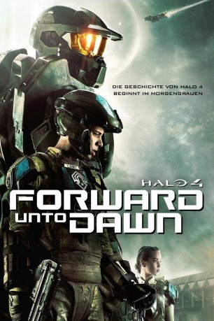

#2525 Halo 4: Forward Unto Dawn
 
 IMDB-Wertung: 7.0 / 10
IMDB-Wertung: 7.0 / 10  Metascore: 0
Metascore: 0 
In 2525, as mankind has begun to colonise space, a group of cadets are training to fight against human insurrectionists. One of these cadets, Thomas Lasky, has doubts about his abilities as a soldier and his convictions for this war. Whilst he struggles with himself, the planet is invaded by an unknown alien race. Reeling under the assault, Lasky and his squad mates are rescued by John-117, one of the UNSC's legendary SPARTAN-II super-soldiers. John must inspire Lasky to fulfill his potential as a soldier and a leader to fight against an enemy deadlier than any that humanity has faced before.
Jahr: 2012
Dauer: 100 Minuten
FSK: 16
Land: USA Studio: Anderson DigitalTonspuren: DTS - ,
Untertitel:
Auflösung: 1080p (1920x800) Größe: 4157 MB
Genre: Action, Sci-Fi
Regisseur: Stewart Hendler
Drehbuch: Aaron Helbing, Todd Helbing
Soundtrack:
Darsteller:
- Tom Green als Thomas Lasky
- Anna Popplewell als Chyler Silva
 Ayelet Zurer als Colonel Mehaffey
Ayelet Zurer als Colonel Mehaffey Mike Dopud als General Black
Mike Dopud als General Black- Enisha Brewster als April Orenski
- Masam Holden als Michael Sullivan
- Iain Belcher als Walter Vickers
 Osric Chau als Junjie Chen
Osric Chau als Junjie Chen- Kat de Lieva als Dimah Tchakova
- Max Carver als Cadmon Lasky
- Daniel Cudmore als Master Chief
- Tony Giroux als Frederic
- Liv Hansen als Cadet
- Alex Puccinelli als Master Chief
 Chris Shields als Dr. Hughes
Chris Shields als Dr. Hughes Ty Olsson als Commander Lasky
Ty Olsson als Commander Lasky- Darren O'Hare als Adult Lasky
 Jill Teed als Col. Lasky
Jill Teed als Col. Lasky- Jenna Berman als Kelly
- Sean Carey als Marine
- Neil Ellice als Marine
- Tommy Europe als Marine
 Patrick Sabongui als Marine
Patrick Sabongui als Marine- Jon Kralt als Yeomen
 Dean Redman als Yeomen
Dean Redman als Yeomen- Jaylene Wells als Cadet
- Jen Taylor als Cortana
- Robin August als Orlin
- Man Hung Chan als Junjie's father
- Robert Boyce als Man
 Frank O'Connor als Janitor Beamish
Frank O'Connor als Janitor Beamish
Datei: X:\HD-Trick-Collections\Halo\Halo 4 Forward Unto Dawn (2012, FSK16, 1920x800).mkv seit 18.11.2015
Festplatte: Kinder-Filme+Trick
 Es gibt insgesamt 8 Filme in der Gruppe 'HD-Trick-Collections\Halo'
Es gibt insgesamt 8 Filme in der Gruppe 'HD-Trick-Collections\Halo'